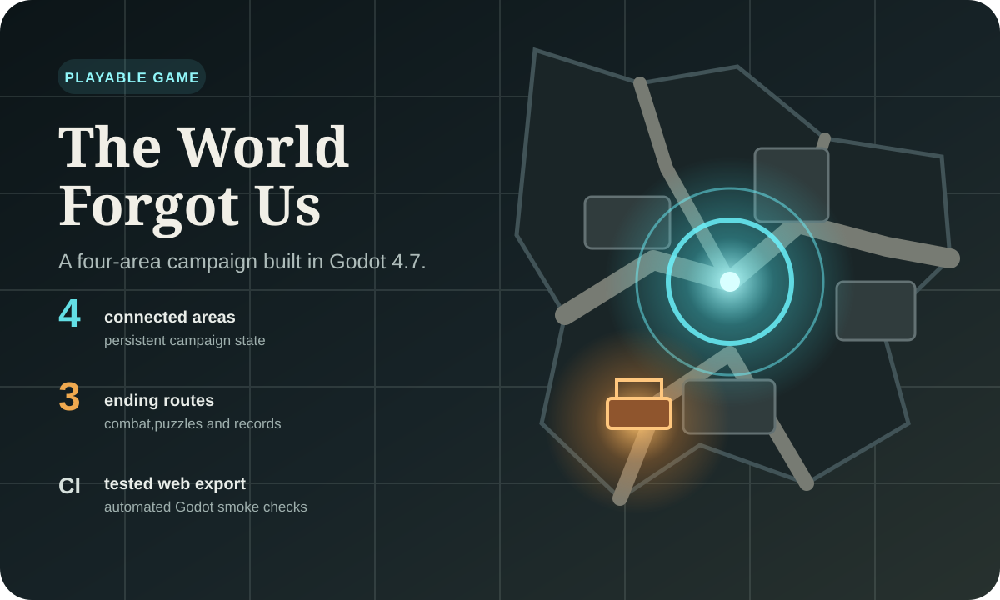

Playable Godot campaign
The World Forgot Us
A top-down road story set around a failed British civil-warning network. A small learning project grew into a four-area campaign with combat, saving, upgrades, NPC assignments, environmental puzzles, optional records and three endings.
- 4campaign areas
- 3ending routes
- 10recoverable traces
- CIsmoke test + web export
Engineering decision trace
Constraint → decision → build → evidence
- Constraint
Campaign state had to survive four maps, saves and a browser export.
- Decision
Keep one persistent campaign record and share map-building rules.
- Build
One authored opening area, then region-specific runtime construction.
- Evidence
The complete campaign smoke test and Web export run in CI.
Engineering notes
The difficult part is keeping campaign state consistent while moving between one authored area and three maps assembled by a shared runtime builder. The Trace Receiver is deliberately used by several systems: it reveals recordings, creates enemy shield windows and carries the central story mechanic.
The project also includes region-aware lighting, a persistent day/night cycle, generated normal maps, adaptive procedural audio and an automated GitHub Actions path that imports the project, runs the campaign smoke test and exports the browser build.
Current limits and next work
The campaign is playable, but pacing and balance still need external playtesting. Combat action frames have less variation than the walk cycle, controller support is unfinished, and the browser build still depends on WebGL 2 and local browser storage.